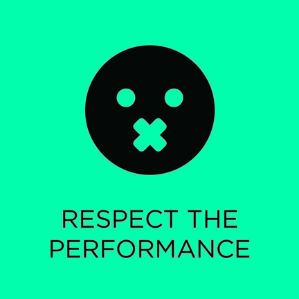

"That corner spot? It's perfect for a concert." - The New York Times
"A complete success." - Edna Landau
What is Tertulia?
Tertulia is a chamber music series that is designed to attract new and experienced audiences alike, or really, anyone who loves incredible food and music. The idea is simple: Tertulia presents world-class chamber music concerts in select restaurants around the city, and musicians and audiences share an evening of music, food, drink and conversation.
At Tertulia we embrace two constants above all else: respect the music during performance, and allow time for the audience to eat and socialize. There are three performances separated by extended intermissions. The format and program is designed to enhance the social and culinary experience, but at all Tertulias, the music is paramount. Questions?

Artistic Directors
James & Julia, Co-Artistic Directors
Bringing together their shared passion for chamber music and New York City's unmatched culinary arts scene, Artistic Directors Julia Villagra and James Austin Smith have created a vibrant concert series aimed at New York's dynamic generation of young music lovers. Julia Tertulia's founder, felt compelled to design a chamber music series that would attract her peers. After moving to New York in 2007, she immediately began to explore the city's dining scene. It was her interest in food and wine that served as inspiration for her decision to bring chamber music into restaurants. Her objective was clear: hire the best musicians, respect the performance, and extend intermissions so people can eat, drink, and be social. Today, the New York Times calls presenters "to observe her approach" in "luring the young and the restless to the charms of chamber music."
James, an oboist, has been praised his "virtuosic" and "brilliant" performances by The New York Times. performs equal parts new and old music across the United States and around the world. In addition to serving as Tertulia's Co-Artistic Director, James is an artist of the Chamber Music Society of Lincoln Center (Chamber Music Society Two), the International Contemporary Ensemble (ICE), the Talea Ensemble, Cygnus and Decoda, and is a regular guest of the Orpheus Chamber Orchestra. He is a member of the faculty of the State University of New York at Purchase and in the fall of 2014 he will join the faculty of the Manhattan School of Music.
Both Julia and James were raised in musical families in Connecticut. They met in high school while playing in a youth orchestra and are thrilled to have reconnected in New York, a decade later.
Our Mission
Tertulia is a 501(c)(3) non-profit organization. It is Tertulia's mission to bring classical music to broader audiences by diversifying the concert experience through creative presentations using a non-traditional venue.
How much music will be performed?On average, Tertulia presents 60 minutes of music, with 75 non-consecutive minutes reserved for eating, drinking, and socializing. The program is divided into 3 performances.
Are drinks included in my ticket price?No. Drinks are paid for by guests, whether alcoholic or non-alcoholic. Guests will be asked to close their tabs at the end of the final performance.